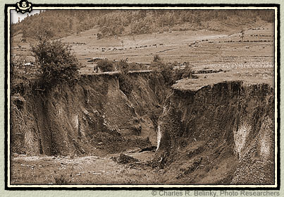
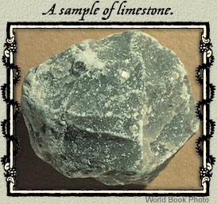

|
Dr. Hutton claims to base his ideas on a careful examination of the rocks of the earth's crust and a study of the processes occurring on earth today. He argues that the history of the earth is recorded in what he calls "natural history," not in human records or even in Holy Scripture. He believes that rocks have been forming, wearing away, and re-forming ever since the earth began.  According to Hutton, rock constantly break down into loose particles. Rain and rivers wash the rock particles off the land into the oceans. There, the particles solidify into new layers of rock, not just by settling to the bottom of the ocean but by the effect of heat from beneath the earth's surface. Dr. Hutton asserts that fire, rather than water, causes many changes in the surface of the earth. He believes that a great number of rocks, including granite, were formed by the slow  cooling and hardening of molten material from deep within the earth. Noting that the two constituents of granite are quartz and feldspar, he argues, "It is not possible to conceive any other way in which these two substances, quartz and feldspar, could thus be concreted, except by congelation [cooling] from a fluid state, in which they have been mixed." He believes that intense heat exists inside the earth and has the power, he says, of "producing an expansive force, sufficient for elevating the land from the bottom of the ocean to the place it now occupies." This process, he believes, has led to the creation of new land surfaces, which replaced the land that had been worn away.Most astonishing of all, Dr. Hutton disputes the Biblical evidence that the earth is 6,000 years old. He argues that the natural processes shaping earth's surface today have been working since earth began at the same slow rate. These processes, he says, must have been repeated many times since the beginning, so "that it had required an indefinite space of time to have produced the land which now appears." Therefore, he concludes, the earth must be immensely old, far more ancient than the 6,000 years indicated by the Bible. |